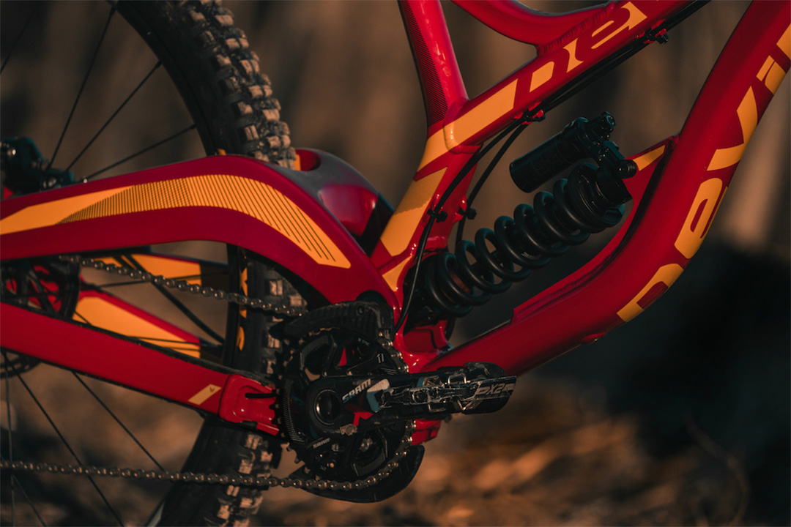
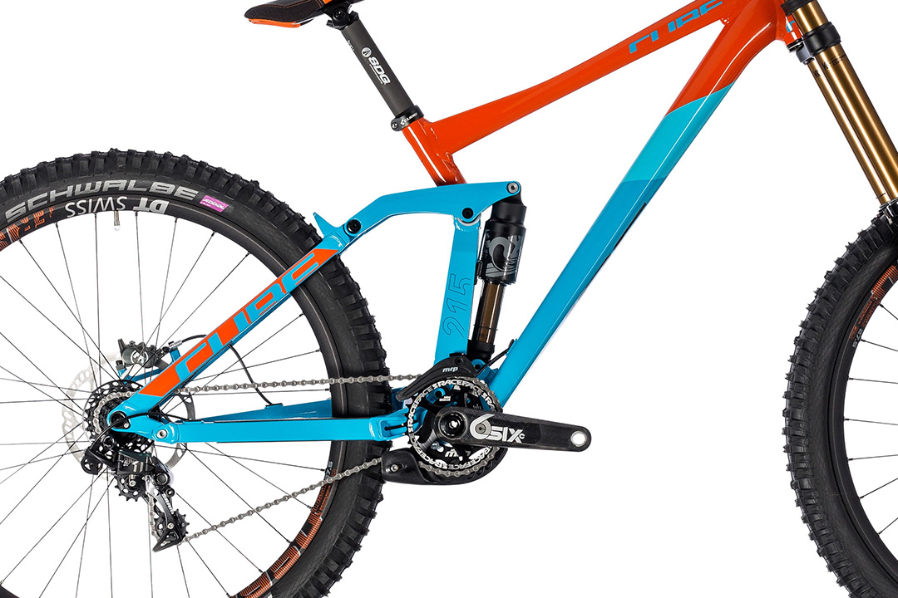

Велосипедна рама — основна частина велосипеда, деталь, яка об'єднує всі інші частини конструкції. Залежно від призначення та умов використання, має різні конструкції та загальну форму, що також впливає на посадку велосипедиста.


Існує два види амортизаторів задньої підвіски. На данному фото зображений пружинний амортизатор.(200mm)
Тут зображений повітряний амортизатор(100mm)